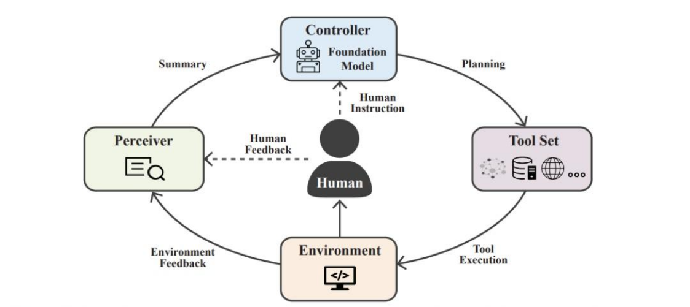

什么是 AI Agent
在大模型技术快速发展的背景下，越来越多的应用不再仅仅把大语言模型当作一个“文本生成工 具”，而是把它当作系统中的智能决策核心。在这种架构下，大模型不只是回答问题，而是能够理解 目标、规划步骤、调用工具并完成任务，这种具备自主决策能力的系统通常被称为 AI Agent（人工智 能智能体）。

简单来说，AI Agent 是一种以大语言模型为核心，通过推理、规划和工具调用来完成复杂任务的智能 系统。它不只是被动地响应用户输入，而是能够根据任务目标进行分析，并主动决定下一步应该做什 么。例如，在一个智能客服系统中，Agent 不仅可以理解用户的问题，还可以查询知识库、调用数据 库接口、生成回复，甚至在必要时创建工单并通知人工客服。整个过程由 Agent 自动完成，而不是由 人类逐步操作。
Agent 定义
从技术角度来看，AI Agent 可以理解为一种由 大语言模型驱动的任务执行框架。在这个框架中，大语 言模型承担了“推理引擎”的角色，而系统则为其提供工具、数据和执行环境，使其能够在真实业务 场景中完成复杂任务。 通常，一个 AI Agent 具备以下几个核心能力：
第一是 理解能力。Agent 需要能够理解用户输入，包括自然语言问题、任务目标以及上下文信息。大 语言模型在这一环节负责语义解析和意图识别。
第二是 推理能力。在理解任务之后，Agent 需要思考应该采取什么策略，例如是否需要查询数据库、 调用 API，或者执行多步操作。
第三是 行动能力。Agent 可以调用外部工具，例如搜索系统、向量数据库、代码执行环境、业务接口 等，从而获取信息或执行操作。 第四是 反馈能力。在执行工具之后，Agent 会获得新的信息，并将这些信息重新输入到大语言模型中 进行进一步推理，直到最终完成任务。
因此，从系统视角来看，AI Agent 可以被理解为一种 “LLM + Tools + Memory + Planning” 的智能 系统架构，其中大语言模型负责决策和推理，而工具和环境负责执行具体操作。
Agent 与普通 LLM 应用区别
很多初学者在接触 AI Agent 时会产生一个疑问：如果大语言模型已经可以回答问题，那么为什么还需 要 Agent？ 关键原因在于，普通的 LLM 应用通常只能完成单轮文本生成任务，而 Agent 可以完成复杂的多步骤任 务。
在传统的大模型应用中，系统通常采用如下方式工作：
用户输入一个问题，系统将问题发送给大语言模型，然后模型生成一段文本作为回答。整个过程是一 次性的，没有任务规划，也没有外部工具调用。例如，一个普通的聊天机器人只能基于训练数据回答 问题，如果问题涉及实时信息或数据库数据，它就无法提供准确答案。 而在 Agent 系统中，流程会完全不同。Agent 在接收到用户请求后，会先对任务进行分析，然后决定 下一步操作。例如：
用户询问订单状态时，Agent 可能会先调用订单查询接口； 用户询问产品信息时，Agent 可能会检索企业知识库； 用户遇到售后问题时，Agent 可能会创建客服工单。
在这个过程中，大语言模型并不是直接生成最终答案，而是作为“决策大脑”，不断思考应该调用什 么工具，并根据工具返回的结果继续推理。
因此，AI Agent 与普通 LLM 应用的主要区别体现在以下几个方面：
首先是 任务复杂度不同。普通 LLM 应用主要处理单步问题，而 Agent 可以处理多步骤任务。 其次是 系统能力不同。普通 LLM 只能生成文本，而 Agent 可以调用工具、访问数据库、执行代码甚至 控制外部系统。 再次是 交互模式不同。传统 LLM 应用通常是一次输入一次输出，而 Agent 则可能在内部进行多轮推理 和工具调用，最终才生成结果。 最后是 系统定位不同。普通 LLM 应用更像是一个“智能问答系统”，而 AI Agent 更像是一个“智能执 行系统”。
正因为如此，在当前的大模型应用架构中，越来越多的系统开始从简单的 Chatbot 架构 逐步演进到 Agent 架构。通过引入工具调用、任务规划和记忆机制，AI 系统不再只是回答问题，而是能够真正参 与业务流程，并在一定程度上替代人工操作。